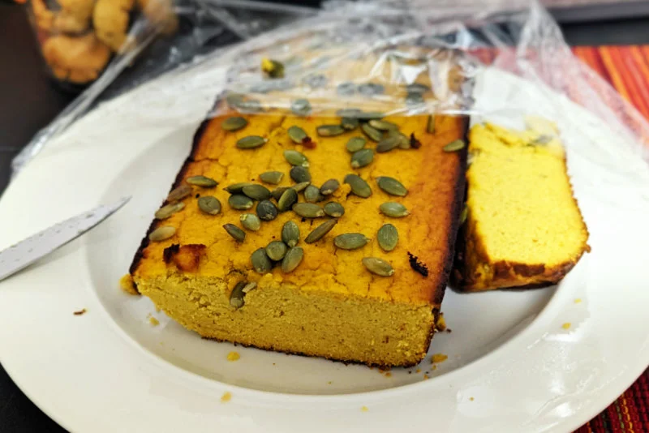

I created this recipe looking for a bread alternative not using any grains, processed sugar and processed oils. It is sitting between bread and cake feel and my wife loved it. I used pasture-raised eggs to my recipe, just because it is more nutritious. But regular eggs should be fine.
- ⏲️ Prep time: 10 min
- ⏲️ Cook time: 45 min
- 🍽️ Servings: 12
Ingredients
- 6 Medium Eggs (or 5 Extra Large)
- 1 Tbsp Coconut Oil
- ¾ cup Coconut Flour
- 1 tsp Baking Powder
- Pinch of Salt
- ½ tsp or less of Xanthan Gum (optional, to have a more stick bread)
Directions
- Mix all dry ingredients in a big bowl.
- Add the whole eggs and the coconut oil.
- Mix well with a spoon until it gets thick. You can add extra coconut flour if you feel it is too liquid.
- Pre-heat your oven to 350°F (175°C).
- Pour the dough evenly into a Bread/Loaf form (coated with butter or parchment paper) and cook for 35 to 45 min.
- After cooking, remove it from the oven and let it sits while it cools down.
- Some variations can be done, like using butter instead of coconut oil or adding pumpkin pure to the mix and having a cake-like texture.